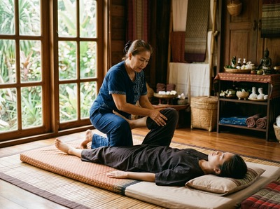
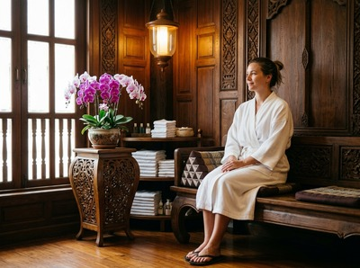

Anderston sits on the south-western edge of Glasgow city centre, hugging the north bank of the River Clyde between Argyle Street and the Clydeside Expressway.
It is a neighbourhood with real texture: a mixed residential and commercial community that includes hotel workers from the Marriott, office staff from the surrounding towers, and long-standing locals who have called this part of the city home for generations. Thai massage in Anderston is well within reach for anyone in the area, with Serendipity Massage Therapy & Wellness just a short distance away on Hope Street.
Anderston is one of the best-connected neighbourhoods in the city. It borders Charing Cross to the north and sits within easy reach of Glasgow's financial district.
Whether you work long hours in an office or spend your day on your feet in hospitality, the physical toll builds up steadily. A regular massage session is not a treat. It is a practical way to manage that tension before it becomes a persistent problem.

Serendipity Massage Therapy & Wellness is based at Central Chambers, 93 Hope Street, in the heart of Glasgow city centre. The studio is staffed by a team of trained therapists who work to the same standard in every session.
Carrying desk tension from a week of back-to-back meetings? Worn out after a demanding shift? There is a treatment here that addresses what your body is actually dealing with. You can book your session online at any time to secure your appointment.
Serendipity offers a full range of therapeutic and relaxation treatments. Every treatment draws on techniques developed by head therapist Jariya Malone. That means a consistent, high standard no matter which therapist you see.
From Anderston, Hope Street is easy to reach on foot or by bus. The walk from Anderston railway station along Argyle Street and into the city centre takes around 12 to 15 minutes.
Several bus routes from the Anderston stop — including the 1, 1A, and 500 — head east into the city centre and drop you close to Hope Street in minutes. If you prefer the subway, St Enoch SPT station is around 15 minutes on foot from Anderston, or you can pick up a connecting bus.
Buchanan Street subway station is another option and puts you within a short walk of Central Chambers. The studio is at Floor 1, Suite 50, 93 Hope Street, G2 6LD.

Serendipity is not a one-person operation. Every therapist on the team is trained to the same standard, using techniques developed in-house by Jariya Malone. That means the quality of your session does not depend on which therapist you see.
Long-term clients from across Glasgow's professional and residential areas return regularly because the results are consistent and the experience is genuinely personal. Book a session and experience that for yourself.
Anderston has one of the richer histories of any inner Glasgow neighbourhood. It began as a village of handloom weavers in the early 18th century, then grew into an industrial hub along the River Clyde.
Today it is a diverse, mixed-use community with a central character, bounded by Blythswood Hill to the north-east and Charing Cross to the north. Learn more about its past on Anderston on Wikipedia.
Serendipity Massage Therapy & Wellness is at 93 Hope Street in Glasgow city centre. It is roughly 12 to 15 minutes on foot from Anderston railway station. The route is simple — along Argyle Street and into the city centre. If you would rather not walk, several bus routes from the Anderston stop will get you there in a few minutes.
You can walk to Hope Street in around 12 to 15 minutes, or take a bus along Argyle Street into the city centre. Routes 1, 1A, and 500 all stop nearby. Anderston railway station connects directly to Glasgow Central, which is a short walk from the studio. The subway at St Enoch is a further option if you are coming from elsewhere on the network.
Same-day availability depends on the current schedule. The quickest way to check is through the online booking page. Serendipity's system is live and updated in real time, so you will see what is free on the day. You can check availability and book online at any time.
For office workers and hospitality staff dealing with neck pain, shoulder tension, and postural strain, Traditional Thai Massage is a strong choice. It uses acupressure and assisted stretching to work through deep muscle tension and restore range of motion. No oils are used, which makes it easy to fit into a lunch break or after a shift.
Thai Deep Tissue Oil Massage is another good option for anyone with persistent tightness or long-standing muscle discomfort.
For the most up-to-date hours, check the Serendipity website or your booking confirmation. The studio is on Hope Street and offers both daytime and evening appointments for clients across Glasgow, including Anderston. You can contact the team on 0141 673 6630 or email relax@serendipitymassage.co.uk with any questions.